This post is about lambda calculus. The goal is not to do maths with it, but rather to build up definitions within it until we can express non-trivial algorithms easily. At the end we will see a lambda calculus interpreter written in the lambda calculus, and realise that we're most of the way to Lisp.
But first, why care about lambda calculus? Consider four different systems:
- A Turing machine – that is, a machine that:
- works on an infinite tape of cells from which a finite set of symbols can be read and written, and always points at one of these cells;
- has some set of states it can be in, some of which are termed "accepting" and one of which is the starting state; and
- given a combination of current state and current symbol on the tape, always does an action consisting of three things:
- writes some symbol on the tape (possibly the same that was already there),
- transitions to some some state (possibly the same it is already in), and
- moves one cell left or right on the tape.
- The lambda calculus ($\lambda$-calculus), a formal system that has expressions that are built out of an infinite set of variable names using $\lambda$-terms (which can be thought of as anonymous functions) and applications (analogous to function application), and a few simple rules for shuffling around the symbols in these expressions.
- The partial recursive functions, constructed by function composition, primitive recursion (think bounded for-loops), and minimisation (returning the first value for which a function is zero) on three basic sets of functions:
- the zero functions, that take some number of arguments and return 0;
- a successor function that takes a number and returns that number plus 1; and
- the projection functions, defined for all natural numbers $a$ and $b$ such that $a \geq b$ as taking in $a$ arguments and returning the $b$th one.
- Lisp, a human-friendly axiomatisation of computation that accidentally became an extremely good and long-lived programming language.
The big result in theoretical computer science is that these can all do the same thing, in the sense that if you can express a calculation in one, you can express it in any other.
This is not an obvious thing. For example, the only thing lambda calculus lets you do is create terms consisting of symbols, single-argument anonymous functions, and applications of terms to each other (we'll look at the specifics soon). It's an extremely simple and basic thing. Yet no matter how hard you try, you can't make something that can compute more things, whether it's by inventing programming languages or building fancy computers.
Also, if you try to make something that does some sort of calculation (like a new programming language), then unless you keep it stupidly simple and/or take great care, it will be able to compute anything (at least in la-la-theory-land, where memory is infinite and you don't have to worry about practical details, like whether the computation finishes before the sun going nova).
Physicists search for their theory of everything. The computer scientists already have many, even though they've been at it for a lot less time than the physicists have: everything computable can be reduced to one of the many formalisms of computation. (One of the main reasons that we can talk about "computability" as a sensible universal concept is that any reasonable model makes the same things computable; the threshold is easy to hit and impossible to exceed, so computable versus not is an obvious thing to pay attention to.)
To talk about the theory of computation properly, we need to look at at least one of those models. The most well-known is the Turing machine. Turing machines have several points in their favour:
- They are the easiest to imagine as a physical machine.
- They have clear and separate notions of time (steps taken in execution) and space (length of tape used).
- They were invented by Alan Turing, who contributed to breaking the Enigma code during World War II, before being unjustly persecuted for being gay and tragically dying of cyanide poisoning at age 41.
In contrast, compare the lambda calculus:
- It is an abstract formal system arising out of a failed attempt to axiomatise logic.
- There are many execution paths for a non-trivial expression.
- It was invented by Alonzo Church, who lived a boringly successful life as a maths professor at Princeton, had three children, and died at age 92.
(Turing and Church worked together from 1936 to 1938, Church as Turing's doctoral advisor, after they independently proved the impossibility of the halting problem. At the same time and also working at Princeton were Albert Einstein, Kurt Gödel, and John von Neumann (who, if he had had his way, would've hired Turing and kept him from returning to the UK).)
However, the lambda calculus also has advantages. Its less mechanistic and more mathematical view of computation is arguably more elegant, and it has less things: instead of states, symbols, and a tape, the current state is just a term, and the term also represents the algorithm. It abstracts more nicely – we will see how we can, bit by bit, abstract out elements and get something that is a sensible programming language, a project that would be messier and longer with Turing machines.
Turing machines and lambda calculus are the foundations of imperative and functional programming respectively, and the situation between these two programming paradigms mirrors that between TMs and $\lambda$-calculus: one is more mechanistic, more popular, and more useful when dealing with (stateful) hardware; the other more mathematical, less popular, and neater for abstraction-building.
Lambda trees
Now let's define exactly what a lambda calculus term is.
We have an infinite set of variables $x_1, x_2, x_3, \ldots$, though for simplicity we will use any lowercase letter to refer to them. Any variable is a valid term. Note that variables are just symbols – despite the word "variable", there is no value bound to them.
We have two rules for building new terms:
- $\lambda$-terms are formed from a variable $x$ and a term $M$, and are written $(\lambda x.M)$.
- Applications are formed from two terms $M$ and $N$, and are written $(M \; N)$.
These terms, like most things, are trees. I will mostly ignore the convention of writing out horrible long strings of $\lambda$s and variables, only partly mitigated by parenthesis-reducing rules, and instead draw the trees.
(When it appears in this post, the standard notation appears slightly more horrible than usual because, for simplicity, I neglect the parenthesis-reducing rules (they can be confusing at first).)
Here are a few examples of terms, together with standard representations:
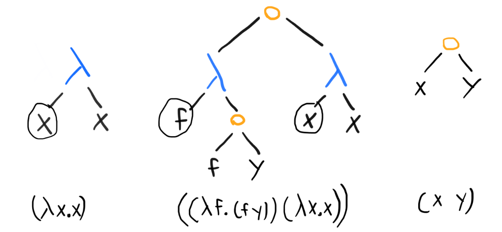
This representation makes it clear that we're dealing with a tree where nodes are either variables, lambda terms where the left child is the argument and the right child is the body, or applications. (I've circled the variables to make clear that the argument variable in a $\lambda$-term has a different role than a variable appearing elsewhere.)
It's not quite right to say that a $\lambda$-term is a function; instead, think of $\lambda$-terms as one representation of a (mathematical) function, when combined with the reduction rule we will look at soon.
If we interpret the above terms as representations of functions, we might rewrite them (in Pythonic pseudocode) as, from left to right:
lambda x -> x(i.e., the identity function) (lambdais a common keyword for an anonymous function in programming languages, for obvious reasons).(lambda f -> f(y))(lambda x -> x)(apply a function that takes a function and calls that function onyto the identity function as an argument).x(y)
Reduction
Execution in lambda calculus is driven by something that is called β-reduction, presumably because Greek letters are cool. The basic idea of β-reduction is this:
- Pick an application (which I've represented by orange circles in the tree diagrams).
- Check that the left child of the application node is a \lambda-term (if not, you have to reduce it to a λ-term before you can make that application).
- Replace the variable in the left child of the λ-term with the right child of the application node wherever it appears in the right child of the λ-term, and then replace the application node with the right child of the λ-term.
In illustrated form, on the middle example above, using both tree diagrams and the usual notation:

(The notation $M[N/x]$ means substitute the term $N$ for the variable $x$ in the term $M$; the general rule for $\beta$-reduction is that given $((\lambda x.M)N)$, you can replace it with $M[N/x]$, subject to some details that we will mostly skip over shortly.)
In our example, we end up with another application term, so we can reduce it further:
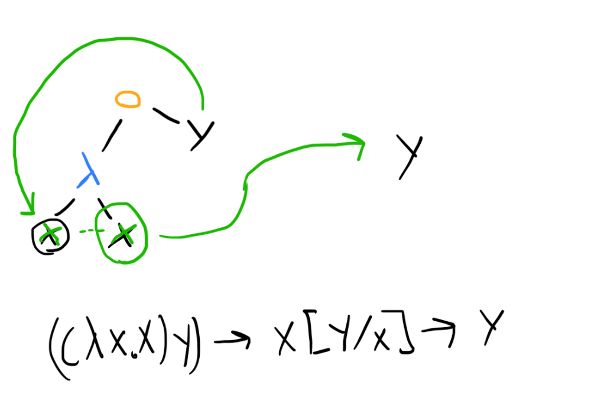
In our Pythonic pseudocode, we might represent this as an execution trace like the following:
(lambda f -> f(y))(lambda x -> x)
-->
(lambda x -> x)(y)
-->
y
Reduction is not always so simple, even if there's only a single choice of what to reduce. You have to be careful if the same variable appears in different roles, and rename if necessary. The core rule is that within the tree rooted at a $\lambda$-term that takes an argument $x$, the variable $x$ always means whatever was given to that $\lambda$-term, and never anything else. A $x$ bound in one $\lambda$-term is distinct from a $x$ bound in another $\lambda$-term.
The simplest way to get around problems is to make your first variable $x_1$ and, whenever you need a new one, call it $x_i$ where $i$ is one more than the maximum index of any existing variable. Unfortunately humans aren't good at remembering the difference between $x_9$ and $x_{17}$, and humans like conventions (like using $x$ for generic variables, $f$ for things that will be $\lambda$-terms, and so forth). Therefore we sometimes have to think about name collisions.
The principle that lets us out of name collision problems is that you can rename variables as you want (as long as distinct variables aren't renamed to the same thing). The name for this is α-equivalence (more Greek letters!); for example $(\lambda x.x)$ and $(\lambda y.y)$ are α-equivalent.
There are, of course, detailed rules for how to deal with name collisions when doing β-reductions, but you should be fine if you think about how variable scoping should sensibly work to preserve meaning (something you've already had to reason about if you've ever programmed). (A helpful concept to keep in mind is the difference between free variables and bound variables – starting from a variable and following the path up the tree to the parent node, does it run through a $\lambda$-node with that variable as an argument?)
An example of a name collision problem is this:
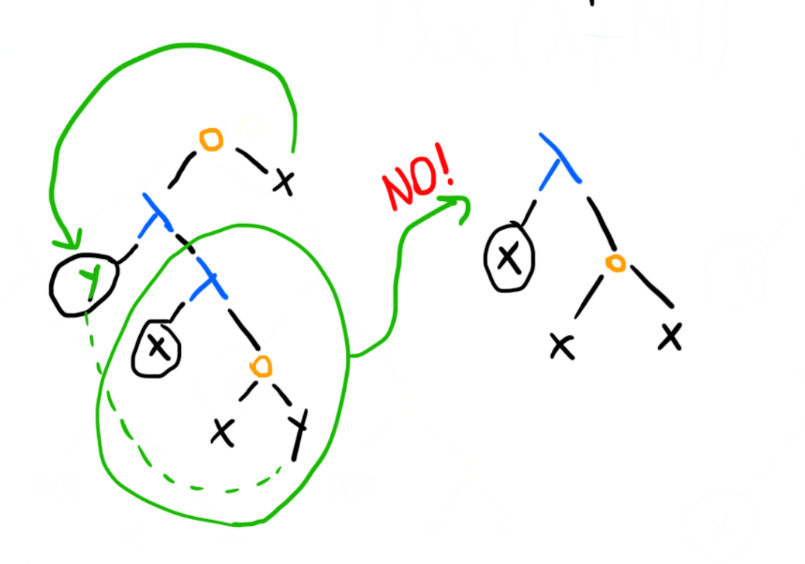
We can't do this because the $x$ in the innermost $\lambda$-term on the left must mean whatever was passed to it, and the $y$ whatever was passed to the outer $\lambda$-term. However, our reduction leaves us with an expression that applies its argument to itself. We can solve this by renaming the $x$ within the inner $\lambda$-term:
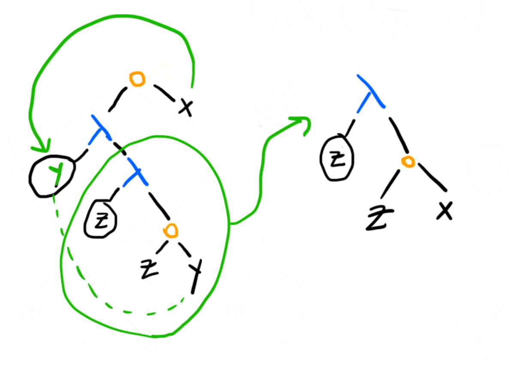
The general way to think of lambda calculus term is that they are partitioned in two ways into equivalence classes:
- The first, rather trivial, set of equivalence classes is treating all $\alpha$-equivalent terms as the same thing. "Equivalent" and $\alpha$-equivalent are usually the same thing when we're talking about the lambda calculus; it's the "structure" of a term that matters, not the variable names.
- The second set of equivalence classes is treating everything that can be $\beta$-reduced into the same form as equivalent. This is less trivial – in fact, it's undecidable in the general case (as we will see in the post about computation theory).
That's it
Yes, really, that's all you need. There exists a lambda calculus term that beats you in chess.
You might ask: but hold on a moment, we have no data – no numbers, no pairs, no lists, no strings – how can we input chess positions into a term or get anything sensible as an answer? We will see later that it's possible to encode data as lambda terms. The chess-playing term would accept some massive mess of $\lambda$-terms encoding the board configuration as an input, and after a lot of reductions it would become a term encoding the move to make – eventually checkmate, against you.
Before we start abstracting out data and more complex functions, let's make some simple syntax changes and look at some basic facts about reduction.
Some syntax simplifications
The pure lambda calculus does not have $\lambda$-terms that take more than one argument. This is often inconvenient. However, there's a simple mapping between multi-argument $\lambda$-terms and single-argument ones: instead of a two-argument function, say, just have a function that takes in an argument and returns a one argument function that takes in an argument and returns a result using both arguments.
(In programming language terms, this is currying.)
In the standard notation, $(\lambda x.(\lambda y.M))$ is often written $(\lambda xy.M)$. Likewise, we can do similar simplifications on our trees, remembering that this is a syntactic/visual difference, rather than introducing something new to the lambda calculus:
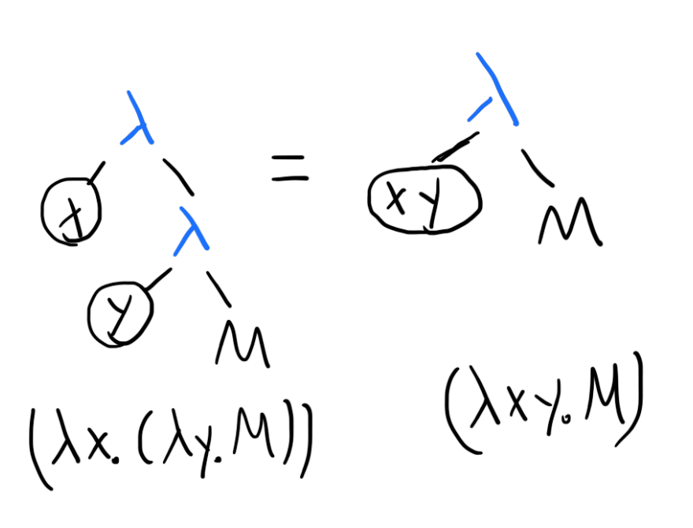
Once we've done this change, the next natural simplification to make is to allow one application node to apply many arguments to a λ-term with "many arguments" (remember that it actually stands for a bunch of nested normal single-argument λ-terms):
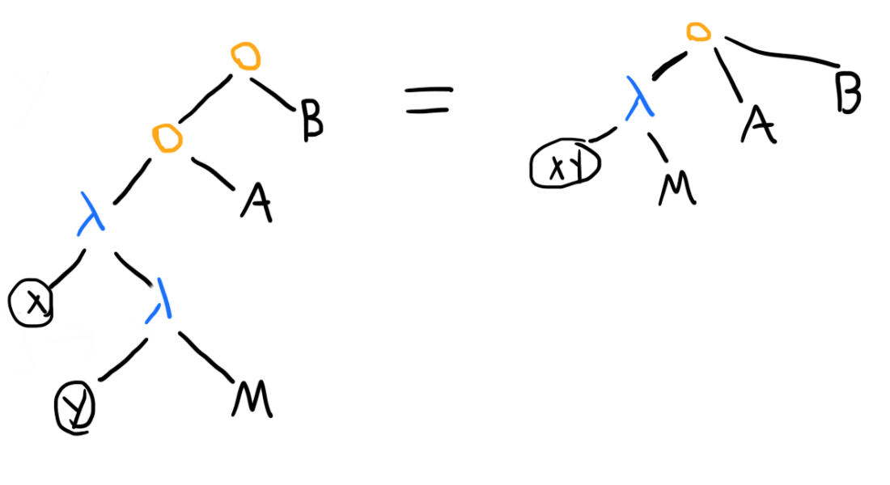
(The corresponding simplification in the standard syntax is that $(M \; A \; B \; C)$ means $(((M \; A) \; B) \; C)$. In a standard programming language, this might be written M(A)(B)(C); that is, applying A to M to get a function that you apply to B, yielding another function that you apply to C. Sanity check: what's the difference between $(M \; A) \; B$ and $(M(A \; B))?$)
Some facts about reduction
$\beta$-normal forms
A $\beta$-normal form can be thought of as a "fully evaluated" term. More specifically, it is one where this configuration of nodes does not appear in the tree (after multi-argument $\lambda$s and applications have been compiled into single-argument ones), where $M$ and $N$ are arbitrary terms:
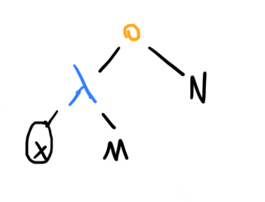
Intuitively, if such a term does appear, then the reduction rules allow us to reduce the application (replacing this part of the tree with whatever you get when you substitute $N$ in place of $x$ within $M$), so our term is not fully reduced yet.
Terms without a $\beta$-normal form
Does every term have a $\beta$-normal form? If you've seen computation theory stuff before, you should be able to answer this immediately without considering anything about the lambda calculus itself.
The answer is no, because reducing to a $\beta$-normal form is the lambda calculus equivalent of an algorithm halting. Lambda calculus has the same expressive power as Turing machines or any other model of computation, and some algorithms run forever, so there must exist lambda calculus terms that you can keep reducing without ever getting a $\beta$-normal form.
Here's one example, often called Ω:
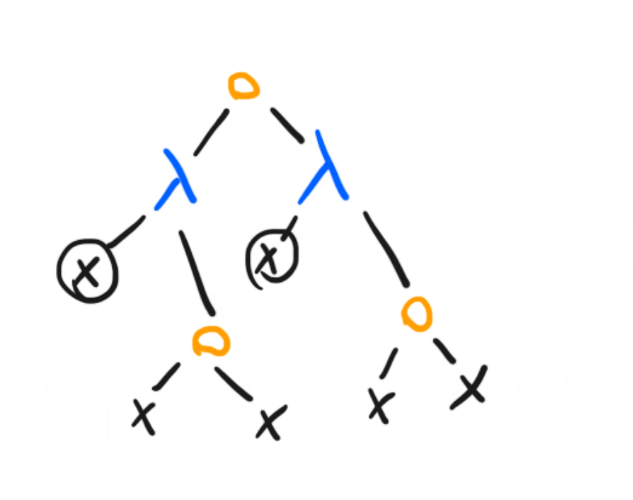
Note that even though we use the same variable $x$ in both branches, the variable means a different thing: in the left branch it's whatever is passed as an input to the left $\lambda$-term – one reduction step onwards, that $x$ stands for the entire right branch, which has its own $x$. In fact, before we start reducing, we will do an $\alpha$-conversion on the right branch (a pretentious way of saying that we will rename the bound variable).
Now watch:
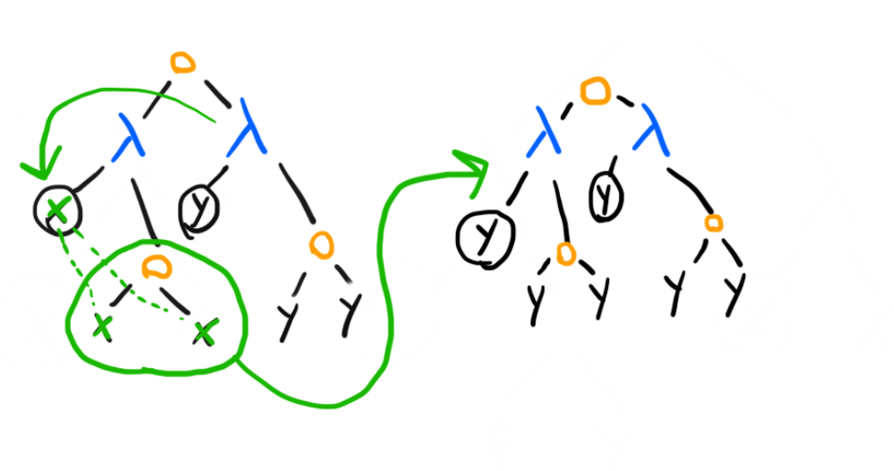
After one reduction step, we end up with the same term (as usual, we are treating $\alpha$-equivalent terms as equivalent; the variable could be $x$ or $y$ or å for all we care).
Ambiguities with reduction
Does it matter how we reduce, or does every reduction path eventually lead to a $\beta$-normal form, assuming that one exists in the first place? If you haven't seen this before, you might want to have a go at this before reading on.
Here's one example of a tricky term:
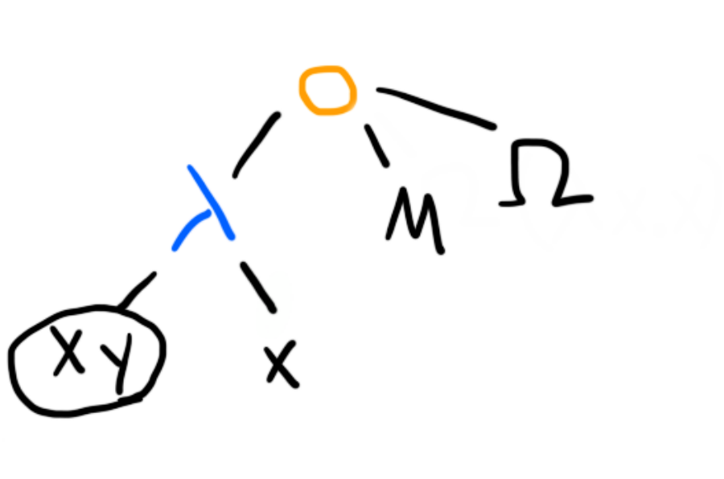
Imagine that $M$ has a $\beta$-normal form, and $\Omega$ is as defined above and therefore can be reduced forever. If we start by reducing the application node, in a moment $\Omega$ and all its loopiness gets thrown away, and we're left with just $M$, since the $\lambda$-term takes two arguments and returns the first. However, if we start by reducing $\Omega$, or are following a strategy like "evaluate the arguments before the application", we will at some point reduce $\Omega$ and get thrown in for a loop.
We can take a broader view here. In any programming language – I will use Lisp notation because it's the closest to lambda calculus – if we have a function like (define func (lambda (x y) [FUNCTION BODY])), and a function call like (func arg1 arg2) , the evaluator has a choice of what it does. The simplest strategies are to either:
- Evaluate the arguments –
arg1andarg2– first, and then inside the functionfunchavexandybound to the results of evaluatingarg1andarg2respectively. This is called call-by-value, and is used by most programming languages. - Bind
xandyinsidefuncto be the unevaluated values ofarg1andarg2, and evaluatearg1andarg2only upon encountering them in the process of evaluatingfunc. This is called call-by-name. It's rare to see it in programming languages (an exception being that it's possible with Lisp macros), but functional languages like Haskell often have a variant, call-by-need or "lazy evaluation", where the values ofarg1andarg2are only executed when needed, but once executed the results are memoized so that the execution only needs to happen once.
Call-by-value reduces what you can express. Imagine trying to define your own if-function in a language with call-by-value:
(define IF
(lambda (predicate consequent alternative)
(if predicate
consequent ; if predicate is true, do this
alternative)) ; if predicate is false, do this instead
(note that IF is the new if-function that we're trying to define, and if is assumed to be a language primitive.)
Now consider:
(define factorial
(lambda (n)
(IF (= n 0)
1
(* n
(factorial (- n 1))))))
You call (factorial 1), and for the first call the program evaluates the arguments to IF:
(= 1 0)1(* 1 (factorial 0))
The last one needs the value of (factorial 0), so we evaluate the arguments to the IF in the recursive call:
(= 0 0)1(* 1 (factorial -1))
... and so on. We can't define IF as a function, because in call-by-value the alternative gets evaluated as part of the function call even if predicate is false.
(Most languages solve this by giving you a bunch of primitives and making you stick with them, perhaps with some fiddly mini-language for macros built in (consider C/C++). In Lisp, you can easily write macros that use all of the language features, and therefore extend the language by essentially defining your own primitives that can escape call-by-value or any other potentially limiting language feature.)
It's the same issue with our term $((\lambda xy.x)M\Omega)$ above: call-by-value goes into a silly loop because one of the arguments isn't even "meant to" be evaluated (from our perspective as humans with goals looking at the formal system from the outside).
Lambda calculus does not impose a reduction/"evaluation" order, so we can do what we like. However, this still leaves us with a problem: how do we know if our algorithm has gone into an infinite loop, or we just reduced terms in the wrong order?
Normal order reduction
It turns out that always doing the equivalent of call-by-name – reducing the leftmost, outermost term first – saves the day. If a $\beta$-normal form exists, this strategy will lead you to it.
Intuitively, this is because with call-by-name, there is no "unnecessary" reduction. If some arguments in some call are never used (like in our example), they never reduce. If we start reducing an expression while doing leftmost/outermost-first reduction, that reduction must be standing in the way between us and a successful reduction to $\beta$-normal form.
Formally: ... the proof is left as an exercise for the reader.
Church-Rosser theorem
The Church-Rosser theorem is the thing that guarantees we can talk about unique $\beta$-normal forms for a term. It says that:
Letting $\Lambda$ be the set of terms in the lambda calculus, $\rightarrow_\beta$ the $\beta$-reduction relation, and $\twoheadrightarrow_\beta$ its reflexive transitive closure (i.e. $M \twoheadrightarrow_\beta N$ iff there exist zero or more terms P1, P2, ... such that $M \rightarrow_\beta P1 \rightarrow_\beta ... \rightarrow_\beta Pn \rightarrow_\beta N$), then:
For all $M \in \Lambda$, $M \rightarrow_\beta A$ and $M \rightarrow_\beta B$ implies that there exists $X \in \Lambda$ such that $A \twoheadrightarrow_\beta X$ and $B \twoheadrightarrow_\beta X$.
Visually, if we have reduction chains like the black part, then the blue part must exist (a property known as confluence or the "diamond property"):
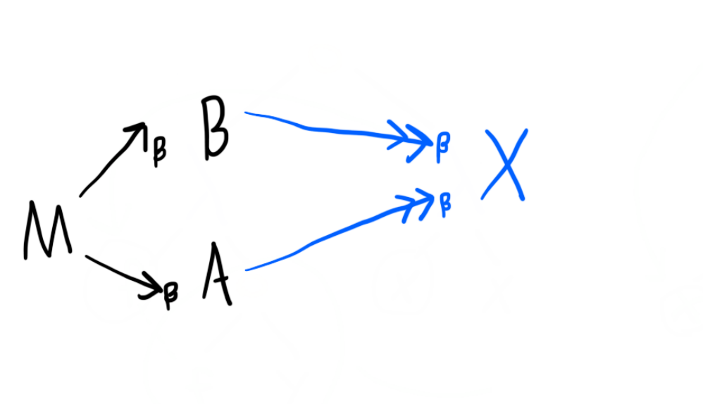
Therefore, even if there are many reduction paths, and even if some of them are non-terminating, for any two different starting $\beta$-reductions we can make, we will not lose the existence of a reduction path to any X. If X is some $\beta$-normal form reachable from M, we know that any other reduction path that reaches a $\beta$-normal form must have reached X.
The fun begins
Now we will start making definitions within the lambda calculus. These definitions do not add any capabilities to the lambda calculus, but are simply conveniences to save out having to draw huge trees repeatedly when we get to doing more complex things.
There are two big ideas to keep in mind:
- There are no data primitives in the lambda calculus (even the variables are just placeholders for terms to get substituted into, and don't even have consistent names – remember that we work within α-equivalence). As a result, the general idea is that you encode "data" as actions: the number 4 is represented by a function that takes a function and an input and applies the function to the input 4 times, a list might be encoded by a description of how to iterate over it, and so on.
- There are no types. Nothing in the lambda calculus will stop you from passing a number to a function that expects a function, or visa versa. There exist typed lambda calculi, but they prevent you from doing some of the cool things with combinators that we'll see later in this post.
Pairs
We want to be able to associate two things into a pair, and then extract the first and second elements. In other words, we want things that work like this:
(fst (pair a b)) == a
(snd (pair a b)) == b
The simplest solution starts like this:
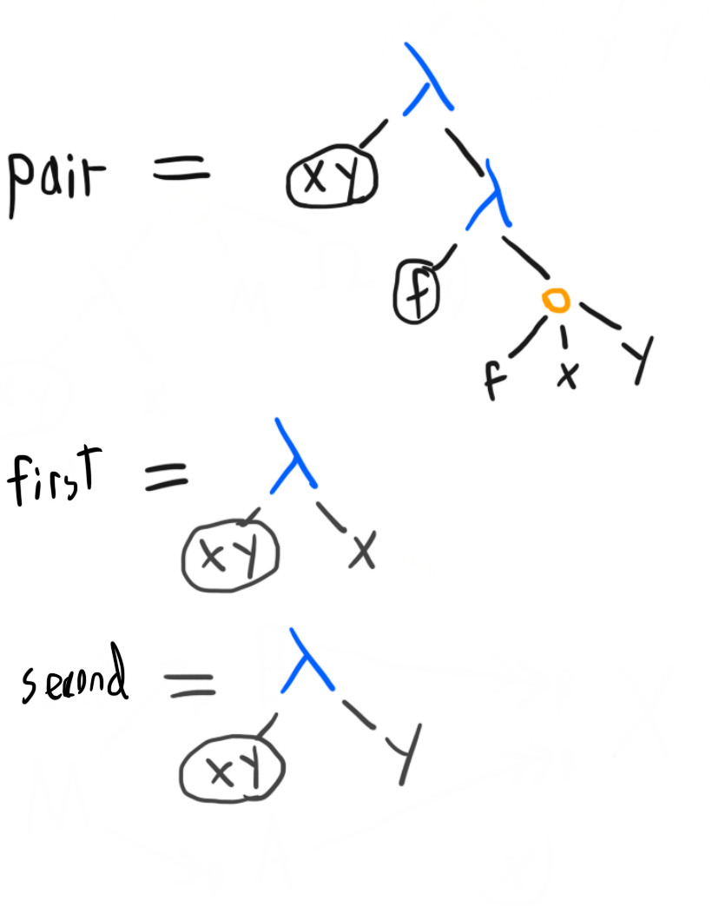
Now we can get the first of a pair by doing ((pair x y) first). If we want the exact semantics above, we can define simple helpers like
fst = (lambda p
(p first))
(i.e. fst=(λp.(pfirst))), and
snd = (lambda p
(p second))
since now (snd (pair x y)) reduces to ((pair x y) second) reduces to y.
Lists
A list can be constructed from pairs: [1, 2, 3] will be represented by (pair 1 (pair 2 (pair 3 False))) (we will define False later). If $l_1$, $l_2$, and $l_3$ are the list items, a length element list looks like this:
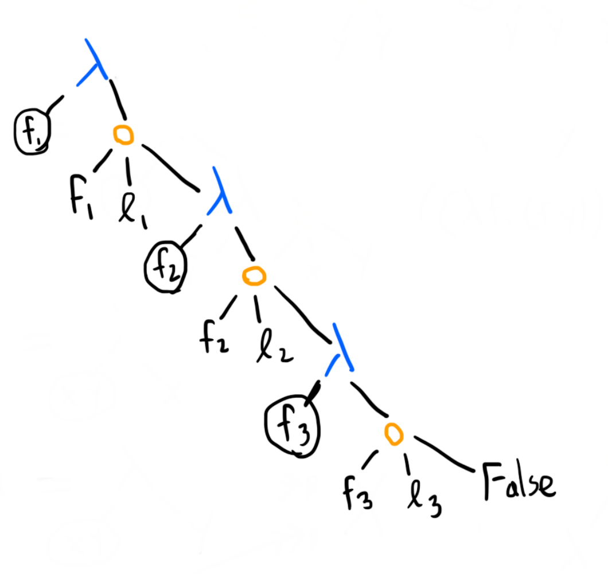
We might also represent the same list like this instead:
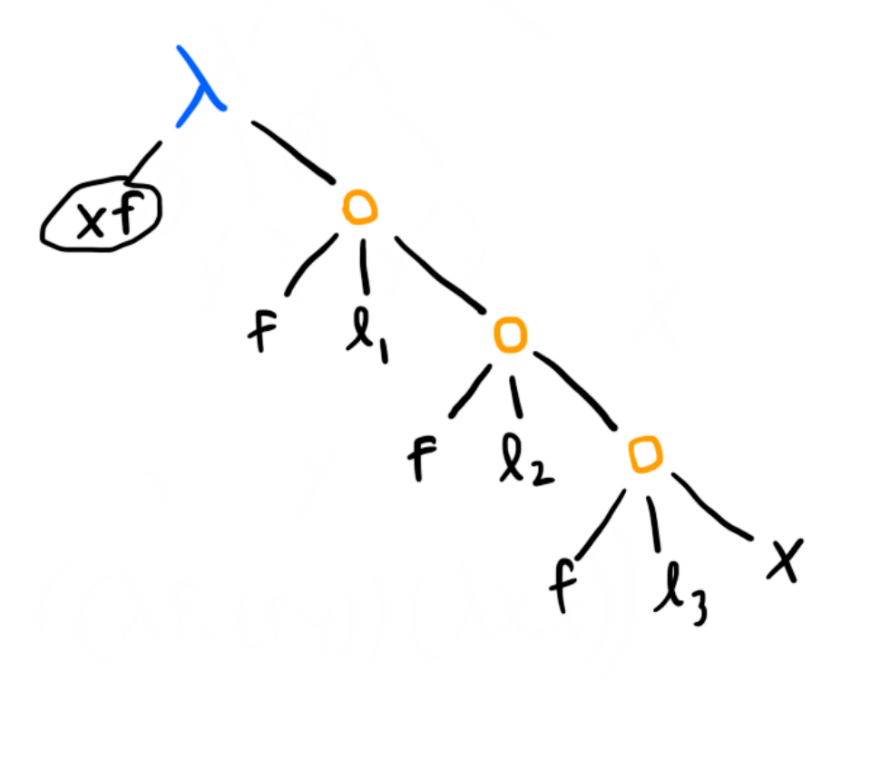
This second representation makes it trivial to define things like a reduce function: ([1, 2, 3] 0 +) would return 0 plus the sum of the list [1, 2, 3], if [1, 2, 3] is represented as above. However, this representation would also make it harder to do other list operations, like getting all but the first element of a list, whereas our pair-based lists can do this trivially ((snd l) gets you all but the first element of the list l).
Numbers & arithmetic
Here are how the numbers work (using a system called Church numerals):
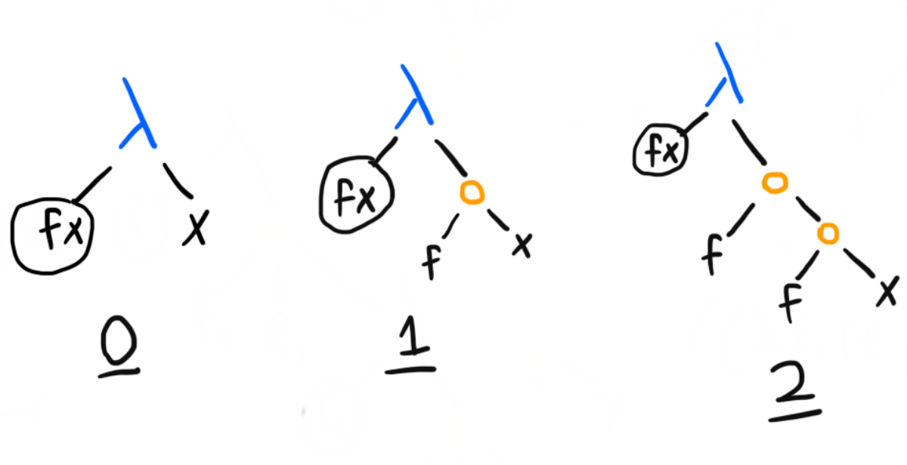
Since giving a function $f$ to a number $n$ (also a function) gives a function that applies $f$ to its input $n$ times, a lot of things are very convenient. Say you have this function to add one, which we'll call succ (for "successor"):
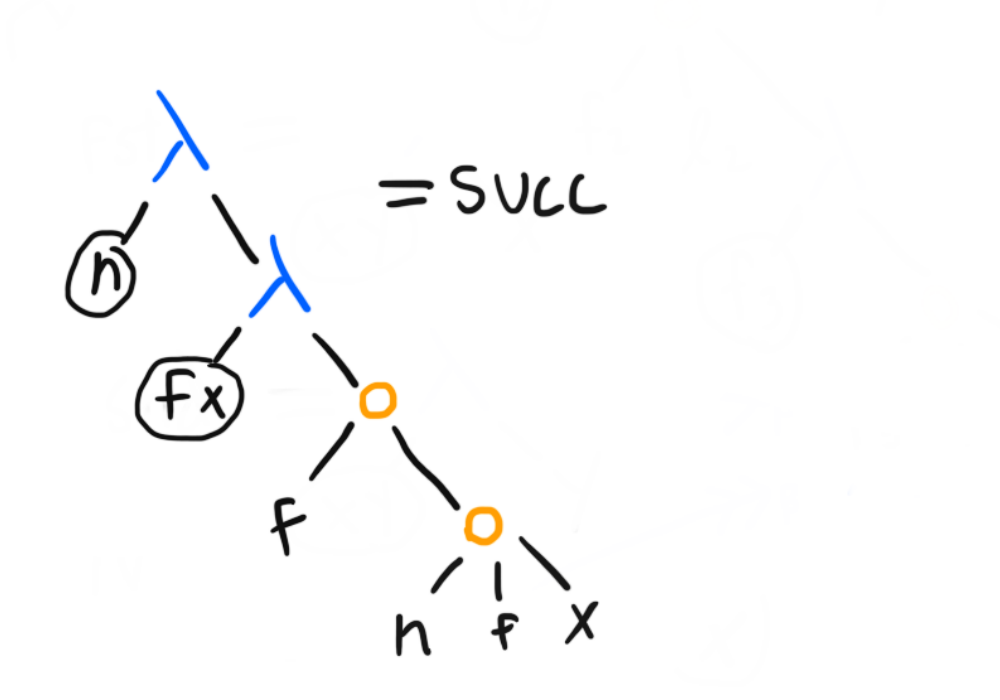
(Considering the above definition of numbers: why does it work?)
Now what is (42 succ)? It's a function that takes an argument and adds 42 to it. More generally, ((n succ) m) gives you m+n. However, there's also a more straightforward way to represent addition, which you can figure out from noticing that all we have to do to add m to n is to compose the "apply f" operation m more times to n, something we can do simply by calling (m f) on n, once we've "standardised" n to have the same f and x as in the $\lambda$-term that represents m (that is why we have the (n f x) application, rather than just n):
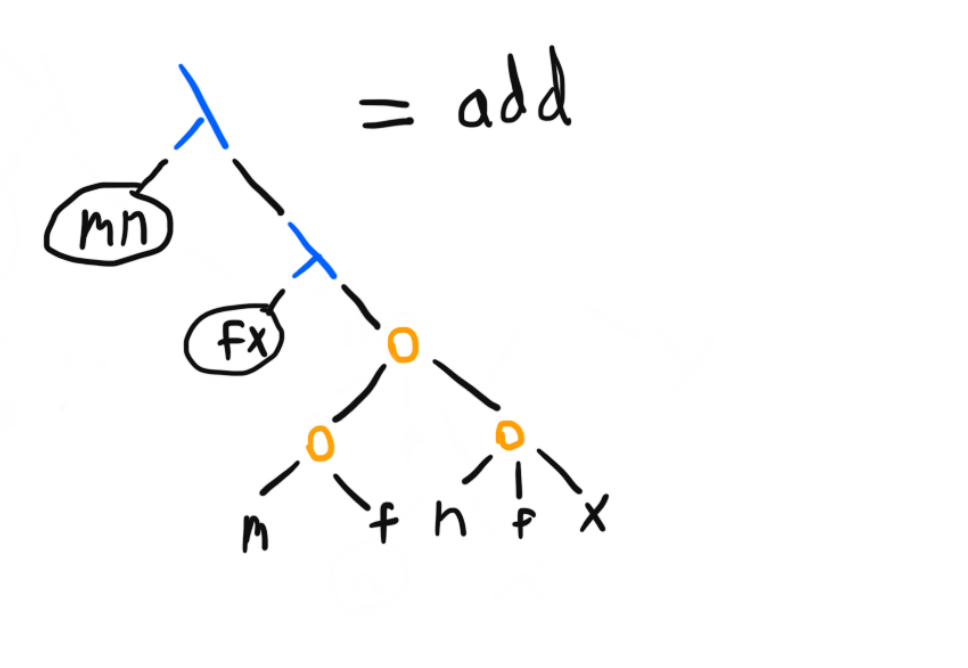
Now, want multiplication? One way is to see that we can define (mult m n) as ((n (adder m)) 0), assuming that (adder m) returns a function that adds m to its input. As we saw, that can be done with (m succ), so:
(mult m n) =
((n (m succ))
0)
There's a more standard way too:
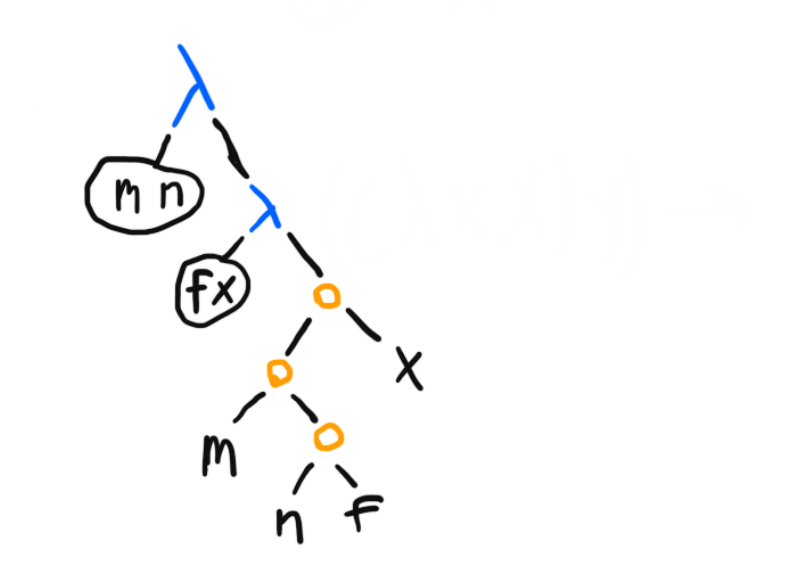
The idea here is simply that (n f) gives a $\lambda$-term that takes an input and applies f to it n times, and when we call m with that as its first argument, we get something that does the n-fold application m times, for a total of $mn$ times, and now all that remains is to pass the x to it.
A particularly neat thing is that exponentiation can be this simple:
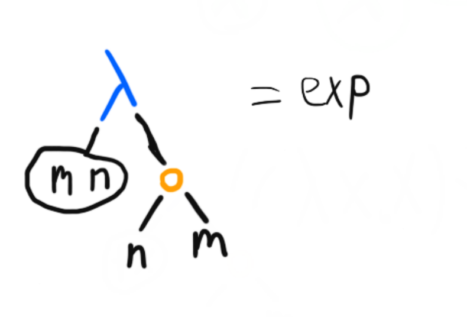
Why? I'll let the trees talk. First, using the definition of n as a Church numeral (which I will underline in the trees below), and doing one $\beta$-reduction, we have:
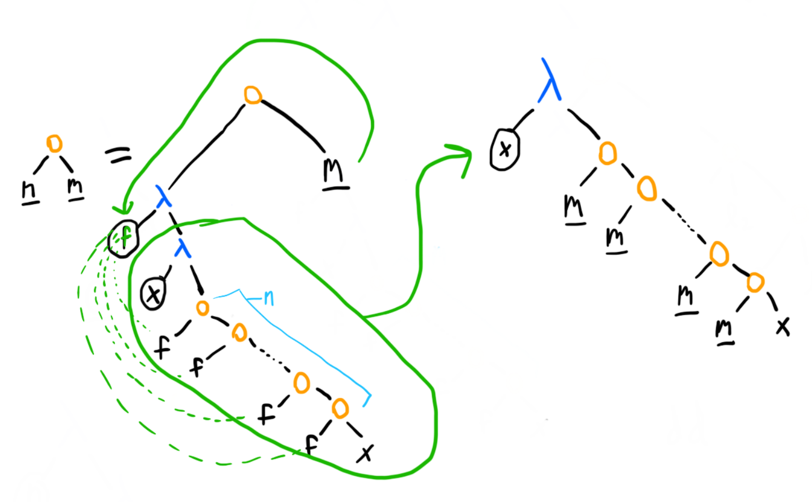
This does not look promising – a number needs to have two arguments, but we have a $\lambda$-term taking in one. However, we'll soon see that the x in the tree on the right actually turns out to be the first argument, f, in the finished number. In fact, we'll make that renaming right away (since we're working under $\alpha$-equivalence), and continue reducing (below we've taken the bottom-most m and expanded it into its Church numeral definition):
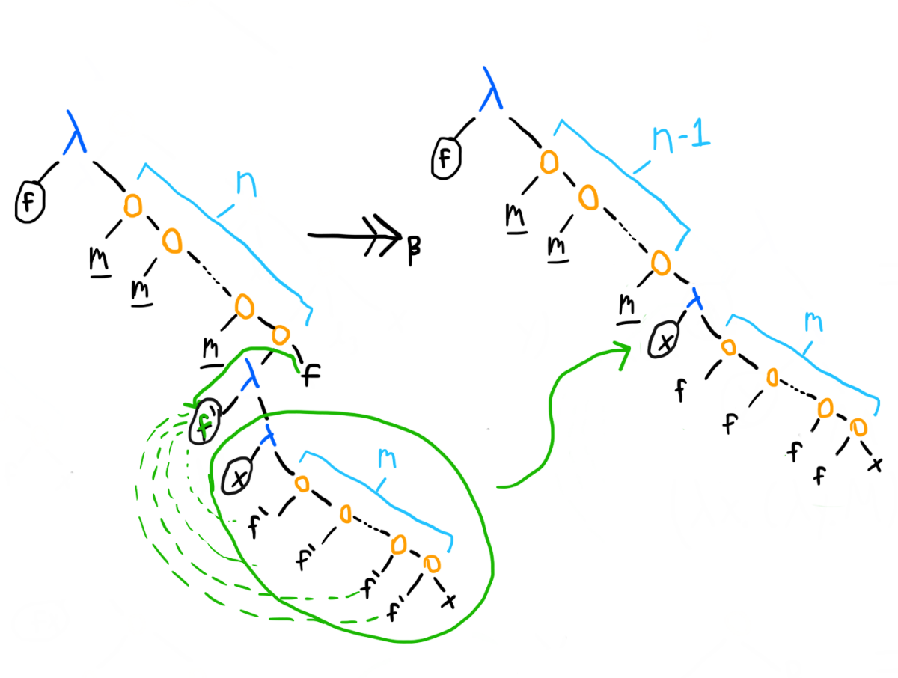
At this point, the picture gets clearer: the next thing we'd reduce is the lambda term at the bottom applied to m, but that's just going to do the lambda term (which applies f m times) m more times. We'll have done 2 steps, and gotten up to $m^2$ nestings of f. By the time we've done the remaining $n-1$ steps, we'll have the representation of $m^n$; the $n-1$ more applications between our bottom-most and topmost lambda term will reduce away, while the stack of applications of f increases by a factor of $m$ each time.
What about subtraction? It's a bit complicated. Okay, how about just subtraction by one, also known as the pred (predecessor) function? Also tricky (and a good puzzle if you want to think about it). Here's one way:
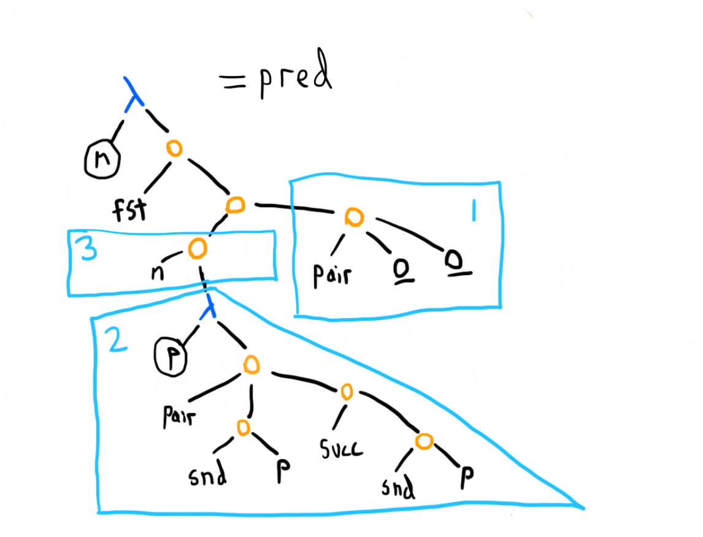
Church numerals make it easy to add, but not subtract. So instead, here's what we do. First (box 1), we make a pair like [0 0]. Next (polygon 2), we have a function that takes a pair p=[a b] and creates a new pair [b (succ b)], where succ is the successor function (one plus its input). Repeated application of this function on the pair in box 1 looks like this: [0 0], [0 1], [1 2], [2 3], and so on. Thus we see that if we start from [0 0] and apply the function in polygon 2 $n$ times (box 3), the first element of the pair is (the Church numeral for) $n−1$, and the second element is $n$, and we can simply call fst to get that first element.
As we saw before, we can define subtraction as repeated application of pred:
(minus m n) =
((n pred) m)
There's an alternative to Church numerals that's found in the more general Scott encoding. The advantages of Church vs Scott numerals, and their relative structures, are similar to the relative merits and structures of the two types of lists we discussed: one makes many operations natural by exploiting the fact that everything is a function, but also makes "throwing off a piece" (taking the rest/snd of a list, or subtracting one from a number) much harder.
Booleans, if, & equality
You might have noticed that we've defined second as $(\lambda xy.y)$, and 0 as $(λfx.x)$. These two terms are a variable-renaming away from each other, so they are $\alpha$-equivalent. In other words, second and 0 are same thing. Because we don't have types, which is which depends only on our interpretation of the context it appears in.
Now let's define a True and False. Now False is kind of like 0, so let's just say they're also the same thing. The opposite of $(\lambda xy.y)$ is $(\lambda xy.x)$, so let's define that to be True.
What sort of muddle have we landed ourselves in now? Quite a good one, actually. Let's define (if p c a) to be (p c a). If the predicate p is True, we select the consequent c, because (True c a) is exactly the same as (first c a) is clearly c. Likewise, if p is False, then we evaluate the same thing as (second c a) and end up with the alternative a.
We will also want to test whether a number is 0/False (equality in general is hard in the lambda calculus, so what we end up with won't be guaranteed to work with things that aren't numbers). A simple way is:
eq0 =
(lambda x
(x (lambda y
False)
True))
If x is 0, it's the same as second and will act as a conditional and pick out True. If it's not zero, we assume that it's some number n, and therefore will be a function that applies its first argument n times. Applying $(\lambda y.False)$ any non-zero amount of times to anything will return False.
Fixed points, combinators, and recursion
The big thing missing from the definitions we've put on top of the lambda calculus so far is recursion. Every lambda term represents an anonymous function, so there's no name within a $\lambda$-term that we can "call" to recurse.
Rather than jumping in straight to recursion, we're going to start with Russell's paradox: does a set that contains all elements that are not in the set contain itself? Phrased mathematically: what the hell is $R=\{x | x \notin R\}$?
In computation theory, sets are often specified by a characteristic function: a function that is always defined if the set is computable, and returns true if an element is in the set and false otherwise.
In the lambda calculus (which was originally supposed to be a foundation for logic), here's a characteristic function for the Russell set $R$:
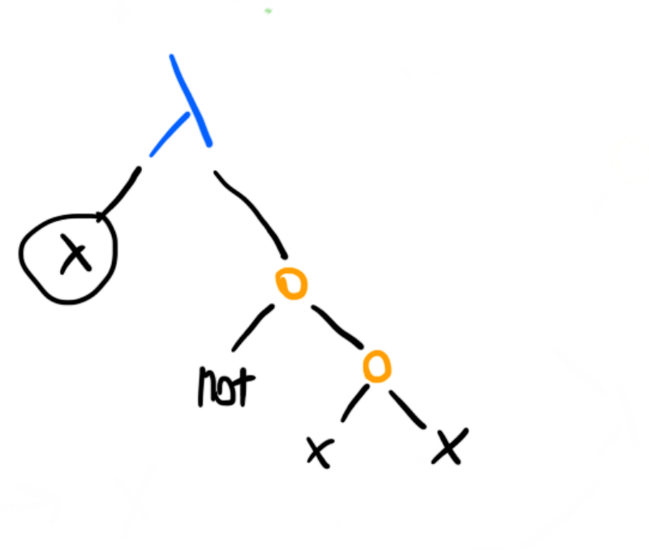
(where not can be straightforwardly defined on top of our existing definitions as (not b) = (b False True)).
This λ-term takes in an element x, assumes that x is the (characteristic function for) the set itself, and asks: is it the case that x is not in the set? Call this term R, and consider (R R): the left R is working as the (characteristic function of) the set, and the right R as the element whose membership of the set we are testing.
Evaluating:
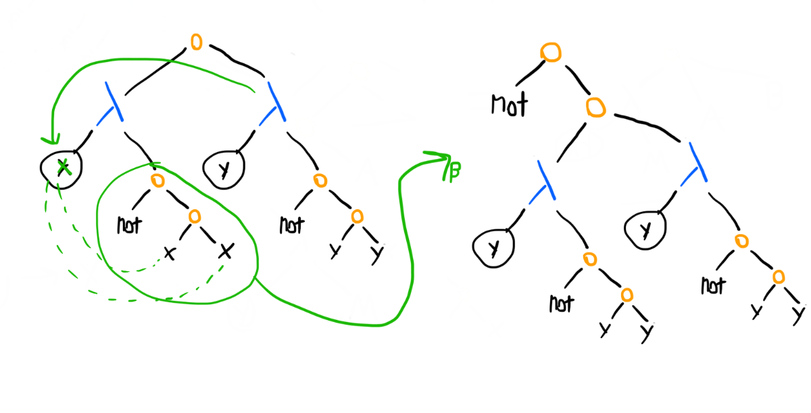
So we start out saying (R R), and in one $\beta$-reduction step we end up saying (not (R R)) (just as, with Russell's paradox, it first seems that the set must contain itself, because the set is not in itself, but once we've added the set to itself then suddenly it shouldn't be in itself anymore). One more step and we get, from (R R), (not (not (R R))). This is not ideal as a foundation for logic.
However, you might realise something: the not here doesn't play any role. We can replace it with any arbitrary f. In fact, let's do that, and create a simple wrapper $\lambda$-term around it that lets us pass in any f we want:
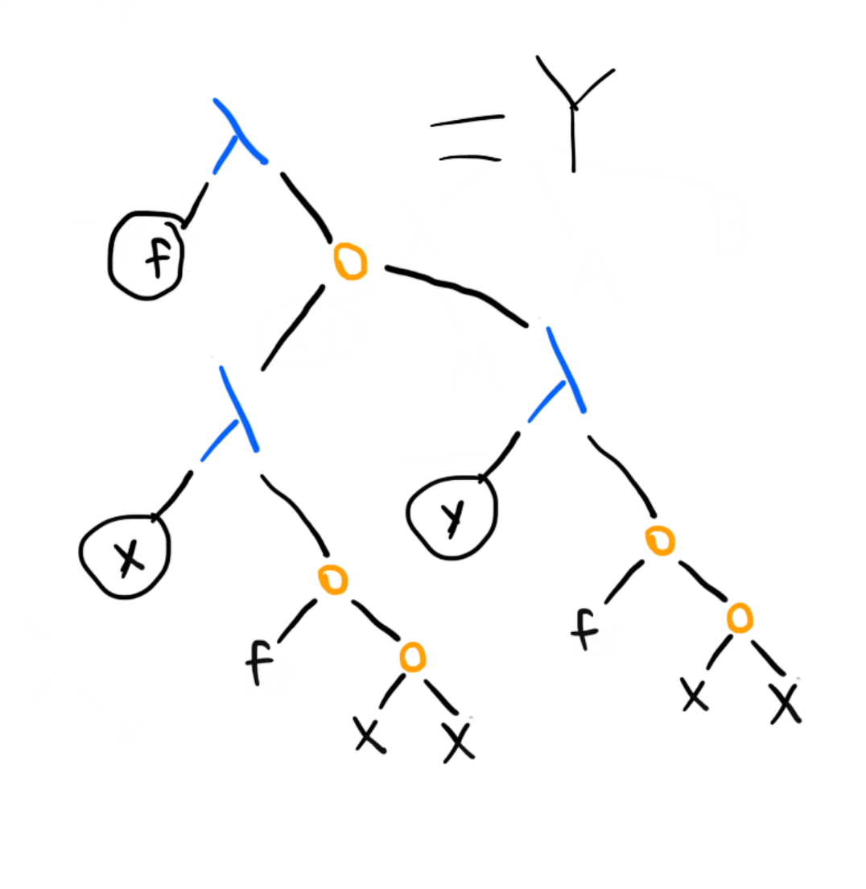
Now let's look at the properties that $Y$ has:
$(Yf) \rightarrow_\beta (f(Yf)) \rightarrow_\beta (f(f(Yf))) \rightarrow_\beta ...$
$Y$ is called the Y combinator ("combinator" is a generic term for a lambda calculus term with no free variables). It is part of the general class of fixed-point combinators: combinators $X$ such that $(X \; f)=(f \; (X \; f))$. (Turing invented another one: $\Theta=(A \; A)$, where $A$ is defined as $(\lambda xy.(y \; (x \; x \; y)))$.
A fixed-point combinator gives us recursion. Imagine we've almost written a recursive function, say for a factorial, except we've left a free function parameter for the recursive call:
(lambda f x
(if (eq0 x)
1
(mult x
(f (pred x)))))
(Also, take a moment to appreciate that we can already do everything necessary except for the recursion with our earlier definitions.)
Call the previous recursion-free factorial term F, and consider reducing ((Y F) 2) (where -BETA-> stands for one or more β-reductions):
((Y F)
2)
-BETA->
((F (Y F))
2)
-BETA->
((lambda x
(if (eq0 x)
1
(mult x
((Y F) (pred x)))))
2)
-BETA->
(if (eq0 2)
1
(mult 2
((Y F) (pred 2))))
-BETA->
(mult 2
((Y F)
1))
-BETA->
(mult 2
((F (Y F))
1))
-BETA->
(mult 2
((lambda x
(if (eq0 x)
1
(mult x
((Y F) (pred x)))))
1))
-BETA->
...
-BETA->
(mult 2
(mult 1
1))
-BETA->
2
It works! Get a fixed-point combinator, and recursion is solved.
Primitive recursion
The definition of the partial recursive functions (one of the ways to define computability, mentioned at the beginning) involves something called primitive recursion. Let's implement that, and along the way look at fixed-point combinators from another perspective.
Primitive recursion is essentially about implementing bounded for-loops / recursion stacks, where "bounded" means that the depth is known when we enter the loop. Specifically, there's a function $f$ that takes in zero or more parameters, which we'll abbreviate as $\bar{P}$. At 0, the value of our primitive recursive function $h$ is $f(\overline{P})$. At any integer $x+1$ for $x \geq 0$, $h(\overline{P},x+1)$ is defined as $g(\overline{P},x,h(\overline{P},x))$: in other words, the value at $x+1$ is given by some function of:
- fixed parameter(s) $\bar{P}$,
- how many more steps there are in the loop before hitting the base case ($x$), and
- the value at $x$ (the recursive part).
For example, in our factorial example there are no parameters, so $f$ is just the constant function 1, and $g(x,r)=(x+1) \times r$, where $r$ is the recursive result for one less, and we have $x+1$ because (for a reason I can't figure out – ideas?) g takes, by definition, not the current loop index but one less.
Now it's pretty easy to write the function for primitive recursion, leaving the recursive call as an extra parameter (r) once again, and assuming that we have $\lambda$-terms F and G for $f$ and $g$ respectively:
(lambda r P x
(if (eq0 x)
(F P)
(G P (pred x) (r P (pred x)))))
Slap a $Y$ in front, and we take care of the recursion and we're done.
The fixed point perspective
However, rather than viewing this whole "slap in the $Y$" business as a hack for getting recursion, we can also interpret it as a fixed point operation.
A fixed point of a function $f$ is a value $x$ such that $x=f(x)$. The fixed points of $f(x)=x^2$ are 0 and 1. In general, fixed points are often useful in maths stuff and there's a lot of deep theory behind them (for which you will have to look elsewhere).
Now $Y$ (or any other fixed point combinator) has the property that $(Y \; f)=\beta(f \; (Y \; f))$ (remember that the equivalent of $f(x)$ is written $(fx)$ in the lambda calculus). In other words, $Y$ is a magic wand that takes a function and returns its fixed point (albeit in a mathematical sense that is not very useful for explicitly finding those fixed points).
Taking once again the example of defining primitive recursion, we can consider it as the fixed point problem of finding an $h$ such that $h=\Phi_{f,g}(h)$, where $\Phi_{f,g}$ is a function like the following, where F and G are the lambda calculus representations of $f$ and $g$ respectively:
(lambda h
(lambda P x
(if (eq0 x)
(F P)
(G P (pred x) (h P (pred x)))))))
That is, Φf,g takes in some function h, and then returns a function that does primitive recursion – under the assumption that h is the right function for the recursive call.
Imagine it like this: when we're finding the fixed point of $f(x)=x^2$, we're asking for $x$ such that $x=x^2$. We can imagine reaching into the set of values that $x$ can take (in this case, the real numbers), plugging them in, and seeing that in most cases the equation $x=x^2$ is false, but if we pick out a fixed point it becomes true. Similarly, solving $h=\Phi_{f,g}(h)$ is the problem of considering all possible functions $h$ (and it turns out all computable functions can be enumerated, so this is, if anything, less crazy than considering all possible real numbers), and requiring that plugging in $h$ into $\Phi_{f,g}$ gives back $h$. For almost any function that we plug in, this equation will be nonsense: instead of doing primitive recursion, on the first call to $h$ $\Phi_{f,g}$ will do some crazy call that might loop forever or calculate the 17th digit of $\pi$, but if it's picked just right, $h$ and $\Phi_{f,g}(h)$ will happen to be the same thing. Unlike in the algebraic case, it's very difficult to iteratively improve on your guess for $h$, so it's hard to think of how to use this weird way of defining the problem of finding $h$ to actually find it.
Except hold on – we're working in the lambda calculus, and fixed point combinators are easy: call $Y$ on a function and we have its fixed point, and, by the reasoning above, that is the recursive version of that function.
The lambda calculus in lambda calculus
There's one final powerful demonstration of a computation model's expressive power that we haven't looked at: being able to express itself. The most well-known case is the universal Turing machine, and those crop up a lot when you're thinking about computation theory.
Now there exists a trivial universal lambda term: $(\lambda fa.(fa))$ takes $f$, the lambda representation of some function, and an argument $a$, and returns the lambda calculus representation of $f$ applied to $a$. However, this isn't exactly fair, since we've just forwarded all the work onto whatever is interpreting the lambda calculus. It's like noting that an eval function exists in a programming language, and then writing on your CV that you've written an evaluator for it.
Instead, a "fair" way to define a universal lambda term is to build on the data specifications we have to define a representation of variables, lambda terms, and application terms, and then writing more definitions within the lambda calculus until we have a reduce function.
This is what I've done in Lambda Engine. The definitions specific to defining the lambda calculus within the lambda calculus start about halfway down this file. I won't walk through the details here (see the code and comments for more detail), but the core points are:
- We distinguish term types by making each term a pair consisting of an identifier and then the data associated with it. The identifier for variables/$lambda$s/applications is a function that takes a triple and returns the 1st/2nd/3rd member of it (this is simpler than tagging them with e.g. Church numerals, since testing numerical equality is complicated). The data is either a Church numeral (for variables) or a pair of a variable and a term ($\lambda$-terms) or a term and a term (applications).
- We need case-based recursion, where we can take in a term, figure out what it is, and then perform a call to a function to handle that term and pass on the main recursive function to that handler function (for example, because when substituting in a application term, we need to call the main substitution function on both the left and right child of the application). The case-based recursion functions (different ones for the different number of arguments required by substitution and reduction) take a triple of functions (one for each term type) and exploit the fact that the identifier of a term is a function that picks some element from the triple (in this case, we call the identifier on the handler function triple to pick the right one).
- We have helper functions for to build our term types, extract out parts, and test for whether something is a λ-term (exploiting the fact that the first element of the pair that a lambda term is is the "take the 2nd thing from a triple" function).
- With the above, we can define substitution fairly straightforwardly. Note that we need to test Church numeral equality, which requires a generic Church numeral equality tester, which is a slow function (because it needs to recurse and take a lot of predecessors).
- For reduction, the main tricky bit is doing it in normal order. This means that we have to be able to tell whether the left child in an application term is reducible before we try to reduce the right child (e.g. the left child might eventually reduce to a function that throws away its argument, and the right child might be a looping term like $\Omega$). We define a helper function to check whether something reduces, and then can write
reduce-appand thereforereduce. For convenience we can define a functionn-reducethat callsreducean expressionntimes, simply by exploiting how Church numerals work (((2 reduce) x)is(reduce (reduce x)), for example).
What we don't have:
- Variable renaming. We assume that terms in this lambda calculus are written so that a variable name (in this case, a Church numeral) is never reused.
- Automatically reducing to $\beta$-normal form. This could be done fairly simply by writing another function that calls itself with the
reduceof its argument until our checker for whether something reduces is false. - Automatically checking whether we're looping (e.g. we've typed in the definition of $\Omega$).
The lambda calculus interpreter in this file has all three features above. You can play with it, and the lambda-calculus-in-lambda-calculus, by downloading Lambda Engine (and a Racket interpreter if you don't already have one) and using one of the evaluators in this file.
Towards Lisp
Let's see what we've defined in the lambda calculus so far:
pair- lists
fstsndTrueFalseifeq0- numbers
- recursion
This is most of what you need in a Lisp. Lisp was invented in 1958 by John McCarthy. It was intended as an alternative axiomatisation for computation, with the goal of not being too complicated to define while still being human friendly, unlike the lambda calculus or Turing machines. It borrows notation (in particular the keyword lambda) from the lambda calculus and its terms are also trees, but it is not directly based on the lambda calculus.
Lisp was not intended as a programming language, but Steve Russell (no relation to Bertrand Russell ... I'm pretty sure) realised you could write machine code to evaluate Lisp expressions, and went ahead and did so, making Lisp the second-oldest programming language. Despite its age, Lisp is arguably the most elegant and flexible programming language (modern dialects include Clojure and Racket).
One way to think of what we've done in this post is that we've started from the lambda calculus – an almost stupidly simple theoretical model – and made definitions and syntax transformations until we got most of the way to being able to emulate Lisp, a very usable and practical programming language. The main takeaway is, hopefully, an intuitive sense of how something as simple as the lambda calculus can express any computation expressible in a higher-level language.